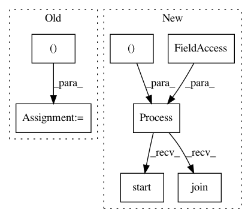

9a50d7bece2e09093f7eec251fc2be5736b131da,tests/keras/applications/applications_test.py,,test_densenet_variable_input_channels,#Any#Any#,352
Before Change
model = fun(weights=None, include_top=False, input_shape=input_shape)
assert model.output_shape == (None, None, None, dim)
input_shape = (4, None, None) if K.image_data_format() == "channels_first" else (None, None, 4)
model = fun(weights=None, include_top=False, input_shape=input_shape)
assert model.output_shape == (None, None, None, dim)
@keras_test
After Change
queue.put(model.output_shape)
queue = Queue()
p = Process(target=target, args=(queue, (None, None, 1)))
p.start()
p.join()
assert not queue.empty(), "Model creation failed."
model_output_shape = queue.get_nowait()
assert model_output_shape == (None, None, None, dim)
In pattern: SUPERPATTERN
Frequency: 3
Non-data size: 7
Instances
Project Name: keras-team/keras
Commit Name: 9a50d7bece2e09093f7eec251fc2be5736b131da
Time: 2018-01-09
Author: myutwo150@users.noreply.github.com
File Name: tests/keras/applications/applications_test.py
Class Name:
Method Name: test_densenet_variable_input_channels
Project Name: automl/auto-sklearn
Commit Name: 8442321b9b7a7cef7e3806b525965c36cea1549e
Time: 2020-09-25
Author: feurerm@informatik.uni-freiburg.de
File Name: examples/60_search/example_parallel_manual_spawning.py
Class Name:
Method Name:
Project Name: keras-team/keras
Commit Name: 71a791cb71ef7080ea150152633a90e7821070af
Time: 2017-09-21
Author: myutwo150@users.noreply.github.com
File Name: tests/keras/applications/applications_test.py
Class Name:
Method Name: test_inceptionresnetv2_variable_input_channels